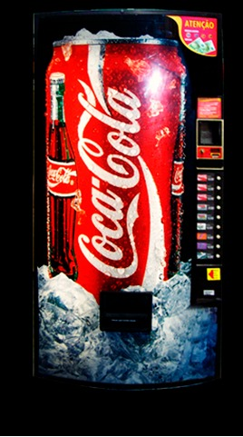

SODA MACHINE - Do you think a leprechaun is the one who makes the soda machine work? That's not exactly how it works, it all starts when you insert the money, a scanner verifies if you put the correct amount and makes the machine follow with the process or gives you back your money, if you put too much money, the machine gives you back the change, amazing isn't it? After the payment process, comes the process of the machine releasing the soda you have chosen, it is a process that mixes intelligence with mechanics, the machine verifies your choice and releases a single can of your choice, there is no point in shaking the machine it will not release more than one, magically it will release your cold drink, amazing isn't it?
